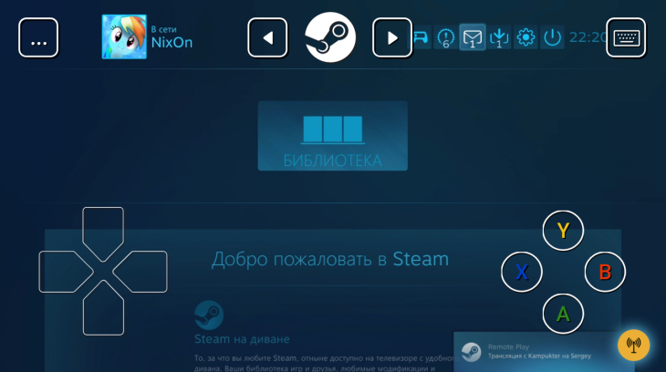
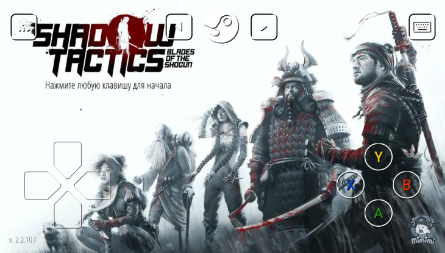

Обзор приложения Steam Link:
нужно ли?

Компания Valve (да-да, та самая, которая недавно выпустила DOTA Underlords) относительно недавно представила сервис Steam Link, о котором активно писали околоигровые порталы.
Сюжетная линия
Невероятная музыка
Непредсказуемая концовка
Мало уровней
Графика на любителя
Быстро приедается
Содержание
Как настроить Steam Link
Все довольно просто — сначала нужно скачатьприложение с App Store. После этого подключиться к Wi-Fi сети (хорошая картинка будет при 5 GHz Wi-Fi, с частотой 2.4 GHz), спарить устройства друг с другом и подождать, пока установятся все необходимые драйверы. После этого на экране компьютера произойдет смена интерфейса приложения Steam, и оба устройства будут показывать одну и ту же картинку (прямо как в TeamViewer). Навигация по экрану смартфона может осуществляться как при помощи кнопок управления, так и с помощью тапов, имитирующих перетаскивание мыши. Все это настраивается в соответствующем меню в левой части экрана.
Как играть в игры через Steam Link
После спаривания устройств вы можете
запускать любые игры, которые есть в Steam. Они будут проигрываться на компьютере (ах да, он должен быть включен) и транслироваться на ваш смартфон. Но нужно понимать, что в этом случае не все игры будут подходить для этого. Вот, например, я пробовал играть в Shadow Tactics — это аналог культовой Commandos. Так вот, играть невозможно — слишком маленький и неудобный интерфейс, тяжело управлять юнитами, нужно пристреливаться к управлению. Как вы понимаете, все соревновательные игры тоже можно вычеркнуть из списка потенциальных «во что бы поиграть» продуктов.Но вот поиграть нормально так и не получилось
Поэтому если вдруг вам хочется поиграть на смартфоне во что-то компьютерное, то рекомендуем обратить внимание на спортивные игры, гонки или какой-нибудь несложный экшен.
все, что связано с соревновательной составляющей, особенно если от скорости отклика и реакции зависит ваша победа, лучше отложить в сторону